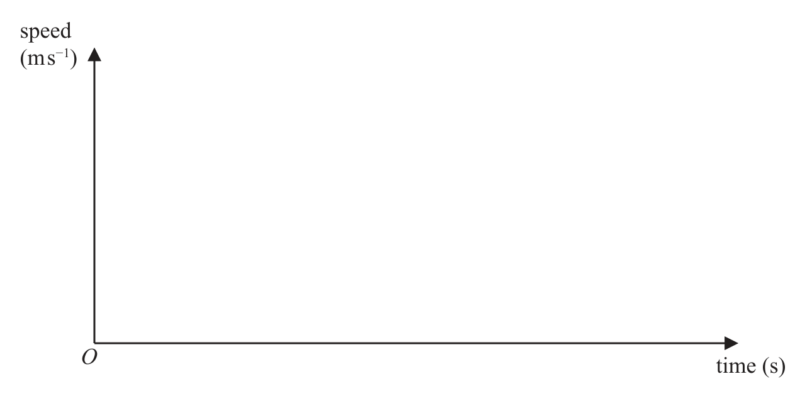
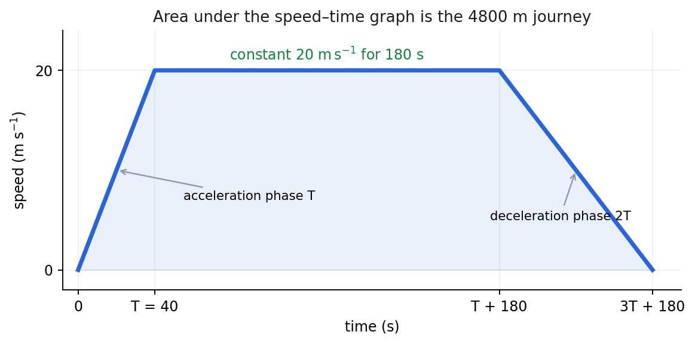

From the official paper. A train travels along a straight horizontal track between two stations A and B.
The train starts from rest at station A and accelerates uniformly for \(T\) seconds until it reaches a speed of \(20\,\mathrm{m\,s^{-1}}\)
The train then travels at a constant speed of \(20\,\mathrm{m\,s^{-1}}\) for 3 minutes before decelerating uniformly until it comes to rest at station B.
The magnitude of the acceleration of the train is twice the magnitude of the deceleration.
(a) On the axes below, sketch a speed–time graph to illustrate the motion of the train as it moves from station A to station B. (3)

If you need to redraw your graph, use the axes on page 3
Stations A and B are 4.8 km apart.
(b) Find the value of \(T\) (5)
(c) Find the acceleration of the train during the first \(T\) seconds of its motion. (2)
(Total for Question 1 is 10 marks)
Lesson status: COMPLETED WITH PROMPTING · Source class: official WME01/01 Jan 2023 (packet Q2)
Teaching visual — speed–time structure.

Final check and stopping point: the requested train answer is completed, so no further work is required; verify the time and acceleration against the graph scales before leaving the question.
Definition and strategy. On a speed–time graph, gradient represents acceleration and horizontal width represents elapsed time. Draw the three physical phases in chronological order: a straight rise from rest to \(20\ \mathrm{m\,s^{-1}}\), a horizontal section at 20 for 180 seconds, then a straight fall to rest. Let the first duration be \(T\).
Use \(a=\Delta v/\Delta t\) to translate the acceleration ratio into a time ratio. The speed change has magnitude 20 on each ramp. Thus \(|a|=20/T\). If the deceleration lasts \(D\), then \(|d|=20/D\). The given \(|a|=2|d|\) gives \(20/T=2(20/D)\), so \(D=2T\). This is why the descending ramp must be twice as wide as the ascending ramp; “twice the deceleration” would describe the opposite ratio, but the paper says the acceleration magnitude is twice the deceleration magnitude.
Before placing labels, compare gradients using the governing definition \(a=\Delta v/\Delta t\). Both ramps change speed by \(20\ \mathrm{m\,s^{-1}}\), so twice the acceleration magnitude requires half the duration. This is why the first rising segment has width \(T\) and the last falling segment has width \(2T\); the graph is not a decorative sketch. The official blank axes supply no scale, so relative widths and cumulative transition labels carry the modelling information. A common diagnostic is to inspect whether a proposed graph makes the final ramp steeper than the initial one: that would reverse the printed acceleration comparison. For transfer, when equal velocity changes accompany a ratio of acceleration magnitudes, invert that ratio to obtain the time-width ratio before drawing.
The transition times are cumulative. The train reaches top speed at \(t=T\). The 180-second constant-speed phase ends at \(t=T+180\), not at \(t=180\). Adding the final duration \(2T\) places rest at \(t=T+180+2T=3T+180\).
Check-back. Both endpoint speeds are zero, the plateau is exactly 20, its width is exactly 180, and the final ramp is twice the first ramp’s width, so its gradient magnitude is half as large.
The plateau’s width should be labelled 180 rather than three, because every horizontal coordinate uses seconds.
The completed graph must encode chronology as well as shape. Three minutes is \(180\) seconds, measured after the train reaches top speed, so the plateau ends at \(T+180\). The final deceleration then lasts \(2T\), placing B at \(3T+180\). Reading those coordinates back gives an independent audit: the first gradient is \(20/T\), the last is \(-20/(2T)=-10/T\), and their magnitudes have ratio two. The graph also begins and ends at zero speed, so it never crosses below the axis. Evidence only supports correction of the peak label to the printed \(20\); it does not support inventing another learner value. On another motion sketch, annotate each transition with cumulative time rather than writing isolated phase durations on the horizontal axis.
Formula and strategy. Distance travelled equals the area under a speed–time graph. Here the whole region is a trapezium, so use \(A=\tfrac12(a+b)h\), where \(a\) and \(b\) are the parallel horizontal sides and \(h\) is the vertical separation. This is quicker than splitting into two triangles and a rectangle, although that valid check is used below.
First make units compatible: \(4.8\ \mathrm{km}=4800\ \mathrm{m}\). The upper parallel side is the 180-second plateau. The lower side spans the total time from zero to \(3T+180\), and the height is \(20\ \mathrm{m\,s^{-1}}\). Therefore
\(4800=\tfrac12\bigl(180+(3T+180)\bigr)(20)\).
Combine inside the bracket before solving: \(180+3T+180=3T+360\), and \(\tfrac12\times20=10\). Hence \(4800=10(3T+360)\). Divide by 10: \(480=3T+360\). Subtract 360: \(120=3T\). Divide by positive three: \(T=40\ \mathrm{s}\). No inequality sign issue occurs, but preserving units shows that the unknown is a time.
The conversion \(4.8\ \mathrm{km}=4800\ \mathrm m\) belongs here, inside the assessed working, because the graph uses seconds and metres per second. After writing the trapezium formula, identify its parallel sides explicitly: the upper side is \(180\), while the lower side is the complete journey duration \(3T+180\). The vertical separation is \(20\). Substitution therefore preserves the geometry rather than treating the formula as an unexplained shortcut. Solving yields a positive time, as the model demands. A quick scale check is that the constant-speed rectangle already contributes \(3600\ \mathrm m\), leaving \(1200\ \mathrm m\) for the two ramps; this makes \(T=40\ \mathrm s\) plausible before the exact decomposition is completed. Transfer recognition: if graph speed units and printed distance units differ, reconcile them before assigning lengths to an area formula.
Independent check. The first triangle has area \(\tfrac12(40)(20)=400\ \mathrm{m}\); the rectangle has area \(180(20)=3600\ \mathrm{m}\); the final triangle has base \(80\) and area \(\tfrac12(80)(20)=800\ \mathrm{m}\). Their sum is \(400+3600+800=4800\ \mathrm{m}\), exactly the stated distance.
The decomposed-area verification is stronger than repeating the trapezium calculation. With \(T=40\), the acceleration triangle is \(400\ \mathrm m\), the rectangle is \(3600\ \mathrm m\), and the deceleration triangle uses base \(80\) to give \(800\ \mathrm m\). These non-overlapping regions total the printed \(4800\ \mathrm m\). The difficult error to diagnose is using \(T\), rather than \(2T\), for the final base; that would make the total short by \(400\ \mathrm m\) and contradict the gradient ratio. The requested answer is \(T=40\ \mathrm s\). Transfer cue: for a piecewise speed–time graph, solve with one area representation and check with a different partition so omitted phases cannot hide.
Formula and strategy. Acceleration is the gradient of a velocity–time or speed–time segment: \(a=\Delta v/\Delta t\). Use the initial rising segment because the question asks for the initial acceleration and because its direction is represented by a positive slope. Carry in the exact duration \(T=40\ \mathrm{s}\) from part (b), rather than measuring a not-to-scale sketch.
At the beginning, \(v=0\ \mathrm{m\,s^{-1}}\) at \(t=0\). At the first transition, \(v=20\ \mathrm{m\,s^{-1}}\) at \(t=T=40\ \mathrm{s}\). Thus \(\Delta v=20-0=20\ \mathrm{m\,s^{-1}}\) and \(\Delta t=40-0=40\ \mathrm{s}\). Substitution gives \(a=(20-0)/(40-0)=20/40=0.5\ \mathrm{m\,s^{-2}}\). The units follow from velocity change divided by time: \((\mathrm{m\,s^{-1}})/\mathrm{s}=\mathrm{m\,s^{-2}}\).
The sign is positive because speed increases on this segment. For comparison, the final ramp lasts \(2T=80\ \mathrm{s}\), so its signed gradient would be \((0-20)/80=-0.25\ \mathrm{m\,s^{-2}}\). Its magnitude is \(0.25\), and \(0.5=2(0.25)\), exactly matching the condition that acceleration magnitude is twice deceleration magnitude.
Part (c) needs only the legitimate prior result \(T=40\ \mathrm s\) and the source speed change. Apply the symbolic gradient definition before inserting numbers: \(a=(v-u)/t\). For the first regime, \(u=0\), \(v=20\) and \(t=40\), so \(a=0.5\ \mathrm{m\,s^{-2}}\). The positive sign matches the rising line. Comparing with the last regime gives \(-0.25\ \mathrm{m\,s^{-2}}\), whose magnitude is half, so the computed answer also checks the condition that generated the sketch. The diagnostic for a wrong denominator is physical: using total journey time mixes three regimes and cannot represent a constant gradient. In a future graph question, isolate exactly the named straight segment and read both endpoint coordinates before calculating slope.
Check-back. Applying \(v=u+at\) to the first phase gives \(v=0+(0.5)(40)=20\ \mathrm{m\,s^{-1}}\), recovering the plotted peak. The positive value and dimensions are therefore consistent.
Choose the straight-segment gradient as the primary strategy because it directly represents the named initial acceleration; use the constant-acceleration relation \(v=u+at\) only as a second check after the gradient has been assessed. Substitution gives \(0+(0.5)(40)=20\ \mathrm{m\,s^{-1}}\), recovering the source endpoint. Units reduce correctly to metres per second squared, and the answer is an acceleration rather than the negative deceleration from the final phase. The source-supported endpoint is \(0.5\ \mathrm{m\,s^{-2}}\). If a later problem asks for a graph-derived acceleration, first identify whether it wants signed acceleration or magnitude; then calculate \(\Delta v/\Delta t\), preserve the segment direction, and use a kinematics substitution only as a check-back rather than as an unexplained first line.